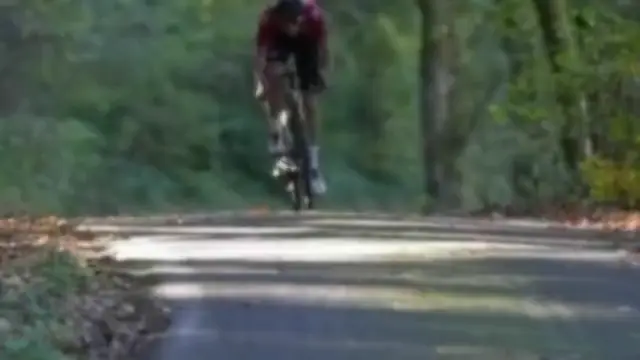

Sicherheits-Check
Wir prüfen Bremsen, Reifen, Schaltung und Licht, bei allen Marken.

GPX-Touren · Rennrad, Gravel & MTB
Start und Ziel ist unser Laden in Schönberg, Kaffee inklusive.
Alle Touren auf einer Karte
Jede Tour beginnt und endet bei uns in Schönberg. Fahr mit der Maus über eine Tour oder tippe sie an, in den Details siehst du die Strecke mit allen Stopps.
Übersicht · Karte stilisiert
– · Karte stilisiert
Tour · Steckbrief Beispielroute
Tipps vom Laden
Das empfiehlt Achim vor jeder Tour. Dazu unsere Öffnungszeiten, falls du danach auf einen Kaffee vorbeikommst.
Wir prüfen Bremsen, Reifen, Schaltung und Licht, bei allen Marken.